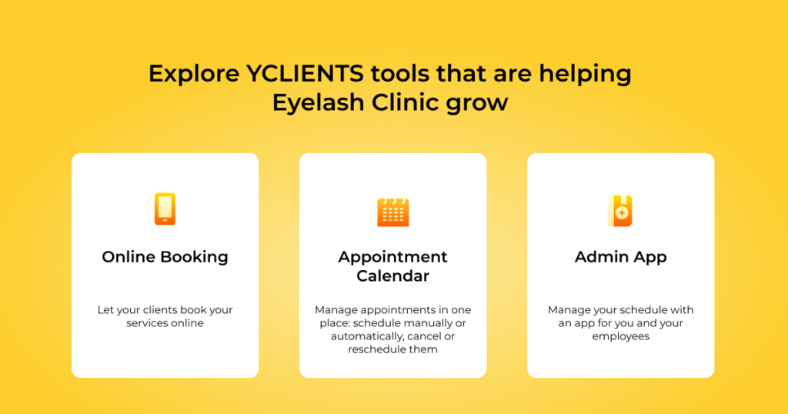
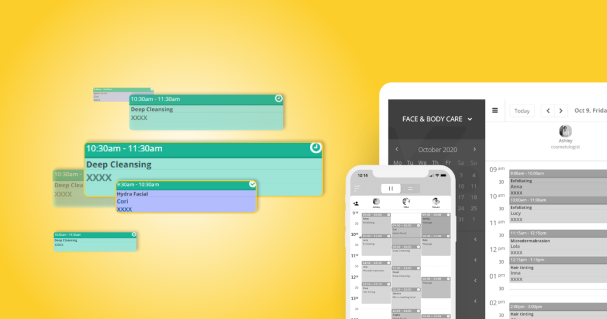
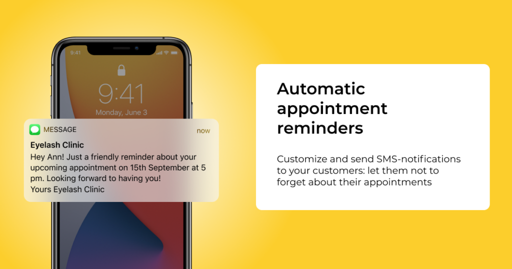

“I couldn’t imagine if there was no YCLIENTS” – interview with Dalma Etter, the founder and co-owner of the Eyelash Clinic in Budapest
Dalma Etter is a founder and co-owner of the Eyelash Clinic – the largest lash extension studio in Budapest. Her sister used to be in touch with the guests manually and arranged appointments until she encountered a new life challenge: the pleasures of maternity.
Dalma had to figure something out urgently. Fortunately, she found out about YCLIENTS – an online booking and appointment scheduling system for the beauty industry. YCLIENTS operates globally and has successfully developing partners in Hungary.
We talked with Dalma about her growing business and how YCLIENTS helped her with that.

– Hi, Dalma! So, tell us about the very beginning of your business?
I started doing eyelash extensions 11 years ago alone and have been growing steadily ever since. When the number of my clients outgrew me, I had to involve my sister. As time went on, our guests fell in love with us so much that we had to expand our team: more and more people joined us. Then, as the number of stylists increased, so did the number of our guests, it became more and more difficult to schedule guests manually.
As soon as the number of clients grew, it became extremely difficult to deal with appointment scheduling
– Now, we are sitting in a beautiful and extremely clean salon but you have just moved in.
We moved in two years ago. We worked in a previous salon for almost 10 years. We had a business plan: we calculated that if two of us (me and my sister) still worked and we hired two stylists after we had moved in, we could continue running our business smoothly. At that time, stylists arranged their upcoming appointments with their guests themselves. But when the day of the move came, two employees said they would rather stay, and since they communicated with their own guests, the guests also stayed with them. Therefore, unfortunately, we lost 50% of our customers at that time.
– What could you do about this? How did you prevent that later on?
We have introduced a different system in our new salon by which the guests could only book appointments via phone of the Eyelash Clinic and we also gave them an appointment upon departure.
However, this system put a huge burden on my sister: keeping in touch with 130-200 people, arranging dates including weekends and holidays.
We simply love it!
-Did your sister keep the appointments on paper?
Yes, or via Google Calendar. Each stylist had a color and we arranged guests based on that. However, scheduling, modifying, and canceling process was almost non-stop work for her, which was quite stressful.
Then she got pregnant so I knew that she would leave us soon. That was the moment I decided to look for an online booking and scheduling system. And we found YCLIENTS. Since February, you can schedule an appointment only online and we simply love it!

– Only online or you combine it with the traditional paperwork?
Guests can still book via phone because I see that they need an extra connection. The young people, who had previously booked appointments via Instagram, got used to it sooner. And for the senior guests, who would have had trouble switching, we allowed booking appointments in person or via phone.
Also, since we provide a special service, I call every new guest, whether they booked online or in person, and ask them if they have any allergies or did lash extensions before.
So the service had not become impersonal by using YCLIENTS as the contact is maintained. All we have to do is invest less energy and time.
– How did the guests welcome it?
They were happy about it. They are happy with all the novelties. They love changes and felt this would be a positive step forward. By the way, I can say that 80% of our guests manage their appointments online and only 20% insist on their next appointment to be arranged before leaving.
Plus, we have a new client who said she only choose a salon where she can book online.
I cannot imagine how it would be without YCLIENTS
– Was the switching to the system troublesome?
There was some transition, as the YCLIENTS calendar works according to a different logic than the Google calendar: there everyone had a different color, while here the stylists have separate calendars with their name and photo on it. Plus, thanks to YCLIENTS app, everyone can see their schedule on their phone.
And guess what: when the first guest booked her appointment online, we remembered her name (learn here how) and celebrated it as she entered the doors.
I have to say, I can’t imagine what it would be like without the YCLIENTS.
– Do the stylists like it? Have they got used to it quickly?
Our specialists can see and track their work schedules.
Plus, as an owner, I can decide what my employees can see from the entire system. I decide how much burden I take off of my shoulders by giving them as many opportunities as they need to fully use the calendar.
I can see the calendar anywhere and anytime, the guests who came, who paid, who booked, and how busy the stylists were. Even when I’m away on vacation, everything works smoothly with the system.
There are countless ways I can see how much money a certain stylist accumulated and what costs we have. What I’ve put into perspective, but haven’t gotten to that point yet, is stock replenishment, which I think will be a huge step forward.
– What if you get stuck in with something?
I call customer service. They are always very helpful. Jokes aside, it was a huge help that customer service was also available at the very beginning, whatever question arose about the setup.
I was able to notify everyone with a few clicks
– What are the greatest advantages?
If a new guest calls while I am working on someone’s lashes, I don’t have to stop my work and flip through calendars to see which stylist has free time and when.
The system automatically enters the guest’s phone number next to the appointment, thus significantly shortens the booking flow. By this, I mean that if someone is late, a stylist has their phone number, because before only me had all the guest numbers. They can call the guest without asking me to be so kind and check with the guest if she is coming for the appointment.
– Which one is your favorite function?
I like being able to send automatic SMS or emails to all guests. When the salon had to be closed in mid-March due to the coronavirus epidemic, we had to draft a single message and circulate it. And when I reopened, I also didn’t have to write the SMS individually, but I was able to notify everyone in a few clicks.
Also, a reminder sent 24-hours before the appointment is also a good thing because many people forget their appointment date. If we remind them a day before, they are more likely to come.

– Do you think it is a good cost?
Even though I’m not a financial genius, I’m sure it is. And it brings a lot of benefits. But if you ask specifically, I would say that by the number of bookings taken with YCLIENTS I have already got back the cost of it.
The number of guests increased without marketing
– Did the revenue also increase since you are using YCLIENTS?
Our profits increased as we saved costs and became more efficient. All services, working hours, and prices have also become transparent and clear. Not to mention that we’ve also reached some visitors we certainly wouldn’t have been able without online booking.
– Since you don’t have a receptionist, I think expenses have also dropped…
That’s right. When you work alone, you free up your own time, which you can spend on productive work or your family or even rest. And if you work with others, you can save on receptionist work and costs with YCLIENTS.
In addition, we didn’t have to create a separate website, we just added the Book Now button to our existing Facebook and Instagram pages, and people could see available dates.
Also, with YCLIENTS we could get new guests without any effort or advertising: we reached out to new people without spending on marketing, so whoever got to our social pages became a guest in most cases because they could make an appointment with us right away. If they had to call us instead, not sure they would actually reach us; I’m talking about if a guest finds our socials on the weekend or just at night.
It was a step forward for us that didn’t require much investment, yet we were able to bring more guests to the salon.
– So, does this mean that if you could go back to Google calendar this all wouldn’t be possible?
Absolutely not possible. By no, I mean that online appointment booking is a service that absolutely sets us apart from the competition. Plus, it’s a cool thing, and being cool is really good for your business!
Contact us to explore YCLIENTS and set online booking and appointment scheduling for your business:
+1 (929) 999-50-13 (US)
global@yclients.com